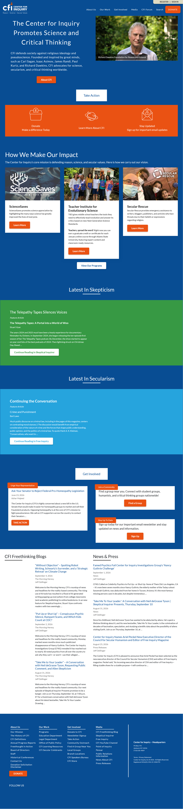
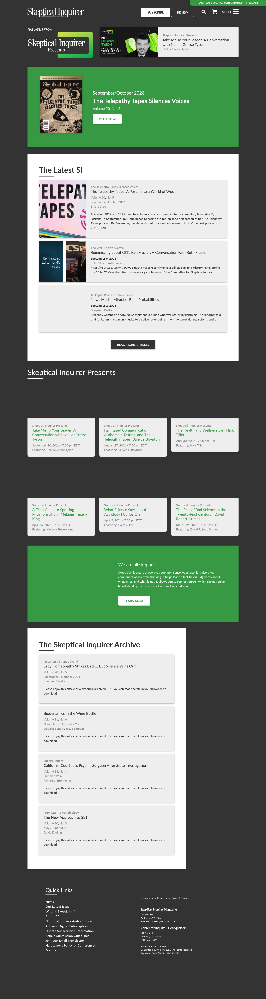

Portfolio
CSIConference.org

Gatsby-based Static Site
centerforinquiry.org

WordPress Website, configured with custom themes and plugins, based on a multi-site configuration.
skepticalinquirer.org

WordPress Website, configured with custom themes and plugins, based on a multi-site configuration.